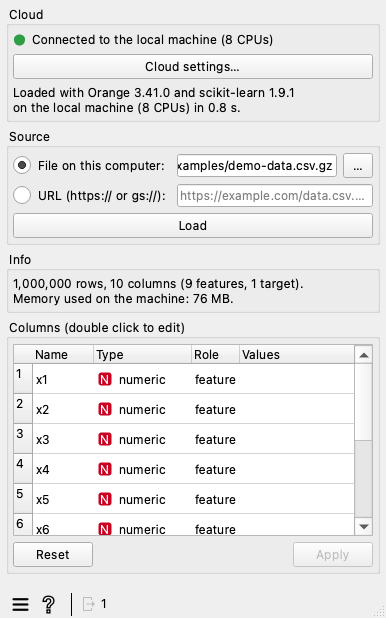

Loads a CSV or Parquet file into the memory of the cloud machine. The data stays on the machine; the output is a cloud table that other widgets connect to as they would to Orange's File widget.

Like every Cloud widget, it has a Cloud box at the top: whether a machine is connected, Cloud settings…, and what the last job ran with, how long it took and what it cost. See Cloud widgets.
https:// address, or a file in your cloud's storage: on Google Cloud, Cloud Storage (gs://bucket/path); on AWS, S3 (s3://bucket/path, any file your AWS profile may read), or on Azure, Blob Storage (az://account/container/path, where account is the storage account: any file your Azure sign-in may read, with the role Storage Blob Data Reader or more). The machine downloads it itself; nothing goes through your computer. On AWS and Azure, Cloud File gives the machine a short-lived, read-only link to the file, signed with your sign-in, each time it loads.Several files as one table. A URL can name several files with the same columns, for example the months of a year, with a numbered pattern in braces: https://example.com/trips_2025-{01..12}.parquet loads trips_2025-01.parquet to trips_2025-12.parquet one after the other into one table (the numbers keep the width of the first one). A list works too: …/{north,south}.csv, and so do several patterns: …/{2024,2025}-{01..12}.parquet. The files must be all CSV or all Parquet, at most 1,000. The first file decides the columns and their types. Columns are matched by name, also when only the letter case differs; a column that some files lack has missing values in their rows, and a column that only later files have is skipped, each with a warning. Numbers of any width, and dates in any unit, fit together; a Parquet column that holds numbers in one file and text in another is an error, unless you set its type in Columns.
Files can be CSV (.csv, .tab, .tsv, .txt) or Parquet, also gzipped (.gz). Files with Orange's three header rows (names, types and flags, as Orange saves them) are read as Orange's File widget reads them. A CSV file whose first line holds only numbers has no header row: its columns are called Feature 1, Feature 2, …, as in Orange.
Load loads the file. When a workflow opens and the machine connects, Cloud File loads by itself, and a table still on the same machine is reused.
Before loading, Cloud File estimates the memory the file needs from its size and its first rows. If that is more than the machine has, it warns, suggests a machine size and a disk size that fit (Cloud settings offers them), and the button becomes Load anyway. Files at URLs are estimated when you click Load.
Info shows the rows and columns of the loaded table and the memory it uses on the machine.
Columns lists the columns as Orange's File widget does. Double-click a type or a role (feature, target, meta, skip) to change it, then click Apply: the machine loads the file again with the new columns, without uploading it again. Reset goes back to what the file says. Columns can't be renamed here; use Edit Domain.
On Google Cloud, AWS and Azure, Uploaded files… lists the files in the add-on's bucket or storage account and deletes the ones you check, after asking. Storage costs about $0.02 per GB a month. Deleting a file doesn't affect tables already loaded.
c#name headers, and instance weights (a weight column is skipped with a warning).